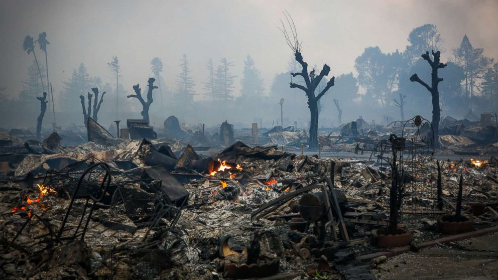
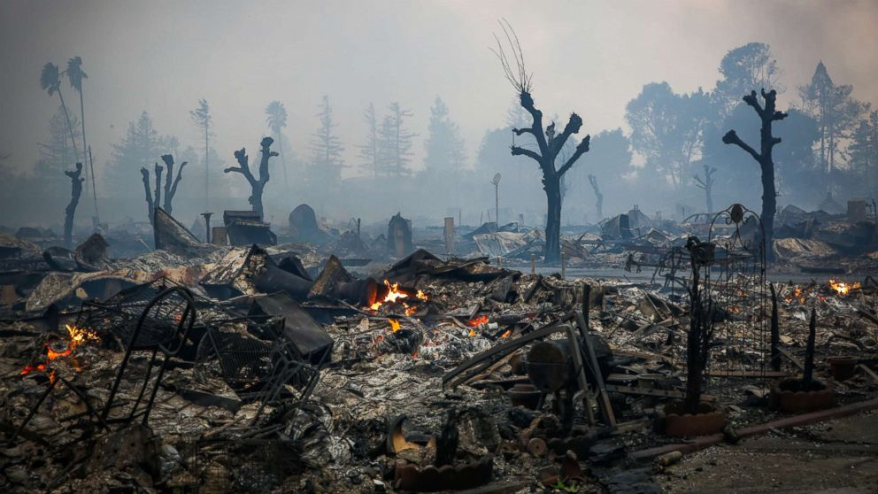

Suppression
Wildfire suppression refers to all the efforts made to stop or
contain a wildfire once it has started. Firefighters, helicopters,
airplanes, and specialized equipment are often used to prevent the
fire from spreading and to protect people, property, and natural
resources.
Common Suppression Techniques
-
Firelines: Clearing strips of vegetation to
remove fuel so the fire can’t cross.
-
Backburning: Intentionally setting small
controlled fires ahead of the main blaze to remove fuel.
-
Water and Retardants: Dropping water or
fire-retardant chemicals from helicopters or airplanes to slow the
fire’s spread.
-
Ground Crews: Firefighters on the ground use
hoses, bulldozers, and hand tools to control the fire’s edges.
-
Monitoring Hotspots: After a wildfire is
contained, teams watch for hidden embers or reignition.
Challenges in Suppression
Suppressing wildfires is dangerous and complex. Weather conditions
like wind, heat, and low humidity can cause sudden flare-ups. Remote
terrain makes it difficult to access burning areas, and climate
change is increasing both the intensity and frequency of fires
worldwide.
Because of these challenges, modern strategies focus not only on
suppression but also on prevention — through forest management,
community awareness, and early detection systems.


 
